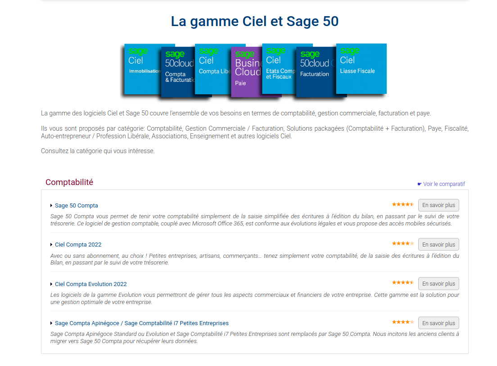

Lien du site ; gestion-compta-paye
Si vous pensez qu'il faut passer à un abonnement mensuel sur le Logiciel de comptabilité "Ciel Compta 2022"
ou alors qu'un tel vous à dit que dorénavant
il faut obligatoirement passer sur une version avec abonnement saché que c'est faux,
liser et reproduiser corectement les explications suivantes.
Cliquez dans le menu de la page d'accueil du Site sur l'onglet "Produits".
Ensuite scroller un peu et cliquez sur "Ciel Compta 2022"
 Si vous scroller sur cette page vous verez comme indiqué dans les images si dessous qu'il est écris
"Vous utilisez une ancienne version de Ciel Compta ?"
Si vous disposez d'une ancienne version de Ciel Compta avec un unique dossier et que vous souhaitez migrer vers l'une de nos offres en abonnement...
Comme vous pouvez le voir, il est clairement écris "que vous souhaitez" CE N'EST PAS OBLIGATOIRE.
Scroller encore un peu sur la page et vous verez une section similaire à l'image si dessous, cliquez sur l'onglet "Tarifs" dans le menu.
Il est clairement écrit version sans abonnement.
Vous l'achetez si ce n'est pas déjà fais.
Vous avez également des Options supplémentaire payante qui ne sont pas du tout OBLIGATOIRE comme montré si dessous.
Cliquez dans le menu principale sur l'onglet "Assistance".
Comme montré dans les deux images si dessous, il est clairement écris dans la page "Assistance" et dans la section "Notre assistance technique"
que l'abonnement est "Recommandé", pas OBLIGATOIRE.
Cliquez sur nous contacter pour passer à l'étape suivante
Dans le menu principale cliquez sur l'onglet "Contact" ou alors sur "nous contacter" si vous veniez de la page "Assistance" comme montré si dessus.
Ensuite, sur la page "Contact" ou directement ici, cliquez sur le lien suivant : page d'enregistrement .

Et enregistrez vous dans le formulaire qui suit en pausant votre question si vous en avez une, (Il est Important de s'enregistrer)
cliquez sur "Valider".
Après vous êtes enregistrez comme expliqué si dessus, envoyer à l'adresse email indiqué (infos@gestion-compta-paye.com)
tout le document ici joint au format PDF, vous pouvez par exemple faire des captures d'écran et envoyez en plusieur fichiers si besoin est
ou même partager le fichier ZIP provenant de votre GitHub.
Exemple si dessous :
Allez à Haut de Page